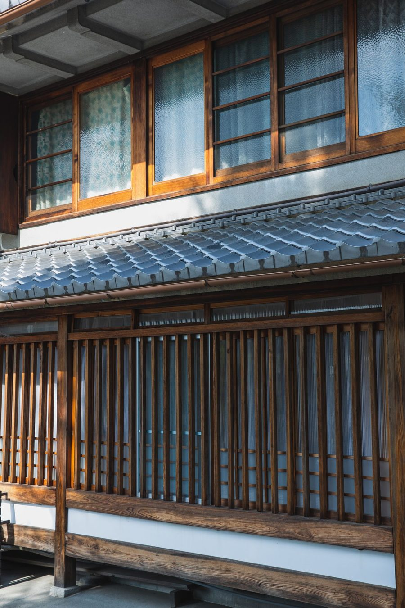

A
使っていない建物をお持ちの方
貸す・直す・手放すの選択肢を、数字と条件で整理します。まずは現状と、次に確認すべきことをお伝えします。
空き家・空き店舗の相談を見る01 ／ ご相談の入口
A
貸す・直す・手放すの選択肢を、数字と条件で整理します。まずは現状と、次に確認すべきことをお伝えします。
空き家・空き店舗の相談を見るB
ペット可の戸建て、造作自由の路面店舗、広い事業用区画。当社が貸主として扱う物件をご案内します。
募集中の物件を見るC
業務の停滞、古い規程、繰り返しの作業を整理し、そのまま使える成果物としてお渡しします。全国リモート可。
経営・業務改善の内容を見る初回30分のご相談とお見積りは無料です。当社は自ら貸主・買主として取引します。宅地建物取引業者ではないため、売買・賃貸の仲介（媒介）はお受けしていません。
02 ／ 3つの事業
A ／ 山形県庄内
鶴岡市・酒田市で戸建てと小規模店舗を9棟、自ら貸主として運営しています。取得、修繕、募集条件の設計、契約、管理まで社内で回しているので、修繕費も決まらない条件も、経験した数字で話せます。
建物・不動産のページへB ／ 全国・リモート可
リスク管理・内部統制、業務プロセスの整理と生成AIによる仕組み化、30日単位の経営改善の伴走、契約書などの書類の突き合わせ。一覧・フロー図・規程案・動くツールの形でお渡しします。
経営・業務改善のページへC ／ 全国・海外
起業直後の方、お店、小さな事務所向けに、問い合わせを受けられる公式サイトを作ります。1ページ165,000円から。日本語・英語の2言語にも対応します。ドメインもサーバーもお客様名義です。
ホームページ制作のページへ03 ／ なぜ、庄内なのか
千葉から移り住んで、ここで会社を始めました。よそから来たから見えたことがあります。
庄内には、まだ十分に使える家と店が、驚くほど安く放置されています。都市部から来ると、その値段が信じられません。同時に、地元では「あれはもう無理だ」と半ばあきらめられている。この認識の差が、そのまま事業の余地です。
私は「地域のために」という言い方をしません。続かないからです。採算が合うから続けられる。続けられるから、建物が生き返る。その順番でしか、空き家は減らないと考えています。
だから当社は、補助金を前提にした計画を立てません。数字が合わない案件は、はっきりお断りします。きれいごとを言わないことが、いちばん誠実だと思っています。
Mission ／ 使命
使われなくなったものに、
次の使い道をつくる。
Vision ／ めざす姿
人口が減っても、
建物と仕事が回り続ける庄内。
Values 01
確かめたことと、推測と、まだ分からないことを必ず分けて書きます。都合のいい数字だけを並べません。監査の仕事で身についた癖であり、当社が最後まで手放さないものです。
Values 02
提案書だけを置いていきません。募集条件書、業務フロー、実際に動くツール——翌日から使えるものをお渡しします。自分の会社でも、同じものを毎日動かしています。
Values 03
資格が要る仕事は受けません。成果も保証しません。見送るべき案件は、その理由をお伝えします。断ることを含めて仕事だと考えています。
04 ／ 実績と裏づけ

買うところから、貸したあとの管理まで、自分でやっています。会社の仕事も同じで、自社の物件査定・経理・タスク管理は自分で作って毎日動かしているものです。
仕事の進め方は監査で身についたものです。確かめたことと、推測を、必ず分けて書きます。都合のいい数字だけを並べません。最悪いくら損をするか、どこでやめるかを先にお伝えします。
05 ／ 会社概要
06 ／ ご相談から着手まで
ボタンを押すと、書く項目が入った状態でメールが開きます。分かる範囲で結構です。
オンラインでも、お電話でも、メールのやり取りだけでも構いません。ここまで無料です。
何をして、何をしないか、いつまでに、いくらか。ご納得いただくまで着手しません。
途中で合わないと感じられたら、業務支援は月単位で止められます。
07 ／ お問い合わせ
下のボタンを押すと、書く項目が入った状態でメールが開きます。分かる範囲で結構です。オンライン30分だけ、でも構いません。
お力になれないと判断したときは、その場で正直にそう申し上げます。
フォームを使わずに、直接メールいただいても構いません。
dewatrek.japan@gmail.com
初回のご相談・お見積りは無料です。営業のご連絡はご遠慮ください。